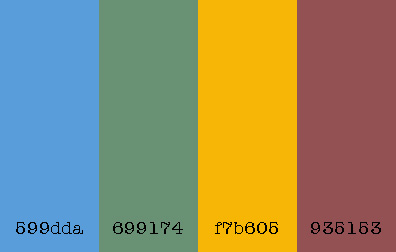

Color Scheme
The way I will use these colors is probably as you see here in this website document plan. I find it is best to play around with the colors on my website and decide by seeing which color is best to use where. I plan on making the weather website to look like this website planning document. That could change as I learn more about what is required for the weather website, but this is a start.